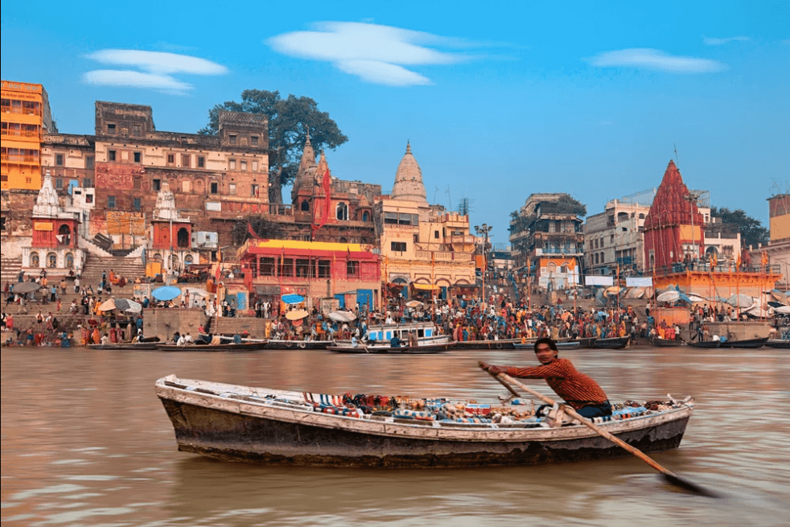
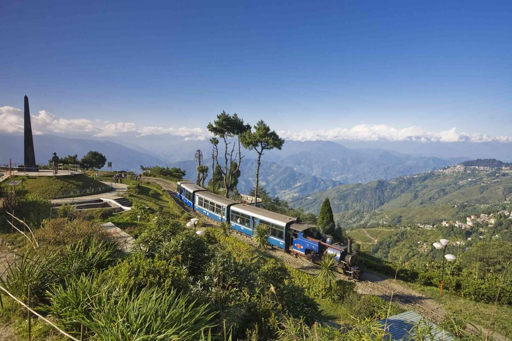
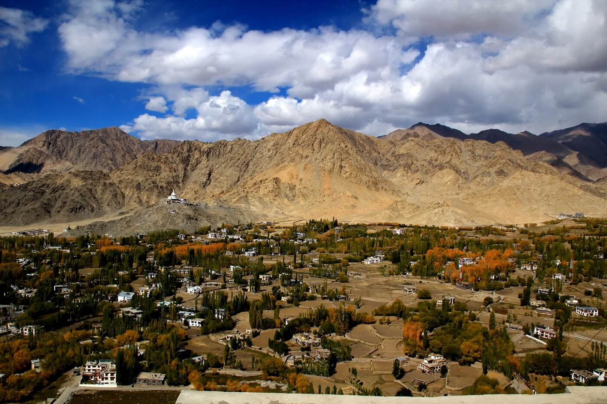
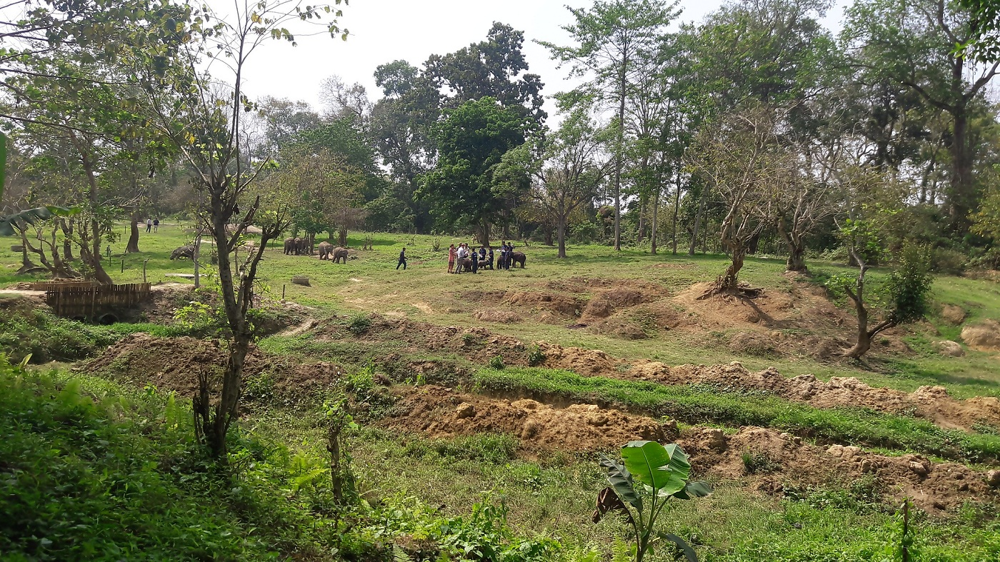
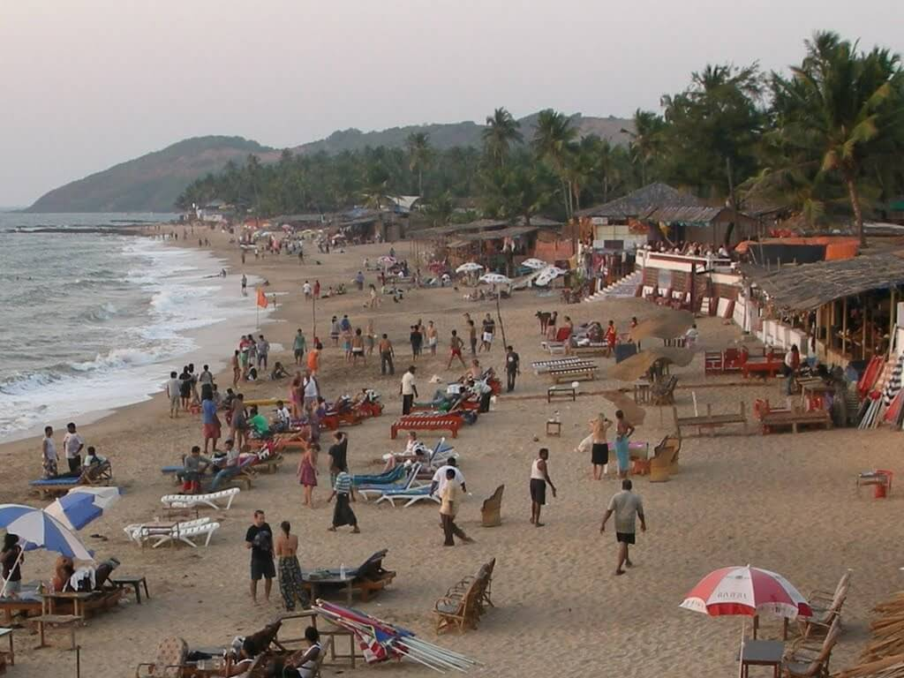

POPULAR PLACES
-
Delhi
-
Agra
-
Jaipur and Udaipur
-
Varanasi
-
Kashmir
-
Darjeeling
-
Ladakh
-
Assam
-
Mumbai
-
Goa
-
Check out other famous places : CLICK HERE
 One of the historic spots in India, Delhi is home to some of the spectacular scenes.
This the capital city of India and the most visited by tourist as it is the first destination which tourists visit ever.
With some of the choicest places you can explore historical monuments, temples, museums and the most popular markets. Such as India Gate, the Lotus Temple, Jama Masjid, Qutub Minar,
there is no dearth of other hotspots in the vicinities.
One of the historic spots in India, Delhi is home to some of the spectacular scenes.
This the capital city of India and the most visited by tourist as it is the first destination which tourists visit ever.
With some of the choicest places you can explore historical monuments, temples, museums and the most popular markets. Such as India Gate, the Lotus Temple, Jama Masjid, Qutub Minar,
there is no dearth of other hotspots in the vicinities.
Tourist Attractions : India Gate, Lotus Temple, Red Fort, Chandni Chowk, Jama Masjid, Qutub Minar, Akshardham Temple, Rajghat, Connaught Place, Jantar Mantar, Humayun's Tomb, Dilli Haat etc.

Agra stands atop. As it homes the world’s most beautiful monument, Taj Mahal, it reigns supreme in the list of famous tourist places in India.
This white falls in the list of Seven Wonders of the World. Agra city also includes places such as Fatehpur Sikri, Agra Fort, Akbar's tomb, Ram Bagh and Sikandra Fort.
Must see the sunset and sunrise view of Taj Mahal. Know more about Agra so that you can explore its places beautifully.
Tourist Attractions : Taj Mahal, Agra Fort, Fatehpur Sikri, Ram Bagh, Akbar's Tomb, Itimad ud Daulah, Akbar’s Mausoleum, Agra Museum, Mehtab Bagh etc.
 Anyone who wishes to unearth the traditional Indian Diaspora must refer to Jaipur and Udaipur. The charming story does not end here as there is no dearth of other fascinating features including geographical locations,
Jal Mahal, Hawa Mahal or 'Palace of Winds'. One gets wonder struck to witness gorgeous forts and palaces turning into heritage hotels. City Palace and the Lake Place of Udaipur are inevitable stops.
Anyone who wishes to unearth the traditional Indian Diaspora must refer to Jaipur and Udaipur. The charming story does not end here as there is no dearth of other fascinating features including geographical locations,
Jal Mahal, Hawa Mahal or 'Palace of Winds'. One gets wonder struck to witness gorgeous forts and palaces turning into heritage hotels. City Palace and the Lake Place of Udaipur are inevitable stops.
Tourist Attractions in Jaipur : Jal Mahal, Hawa Mahal, City Palace, Nahargarh Fort, Jaigarh Fort, Jantar Mantar, Local Markets, Chokhi Dhani, Raj Mandir, Sisodia Rani Garden, Galta Ji Temple etc.
Tourist Attractions in Udaipur : City Palace, Lake Pichola, Fatehsagar Lake, Vintage Car Museum, Jagdish Temple, Eklingji Temple, Jaisamand Lake, Saheliyon ki Bari, Local Markets etc.

Varanasi is the spiritual capital of the country. If you have a weird imagination of India, Varanasi is the right place to make it a reality. Varanasi is one of the oldest inhabited cities, which is still in use.
The River Ganges plays an important role in imparting spirituality to the region.
The alleys and streets of the place are packed with numerous types of temples. Varanasi is the place where religious magic takes place. You can find Aghori sadhus smearing ashes over their bodies, and pandits teaching young minds along the ghats of River Ganges.
From the reality of religion to the purity of death, this is the city to see everything.
Tourist Attractions : Ganga Aarti at Dashashwamedh Ghat, New Vishwanath Temple, Kashi Vishwanath Temple, Sankat Mochan Hanuman, Durga Temple, Tibetan Temple, Ramnagar Fort, Tulsi Manas Temple, Sarnath, Manikarnika Ghat, and other.

It is considered to be one of the indomitably beautiful destinations in the Indian context. With lush green mountainous views,
there are snow clad peaks along with amazing waterfalls, flower gardens etc. Indeed, Kashmir is a destination worth millions and
its beauty enhances during the winters. The boat ride on Dal Lake is simply unforgettable. Gulmarg, Nagin Lake, Srinagar, Sonmarg,
Pari Mahal, Shankracharya shrine and Pehalgam are to name a few of the hotspots in Kashmir.

Popularly considered to be the ''Queen of the Hills'', Darjeeling is at an altitude of 2134 mete above sea level.
With the rolling mountains, the audacity of this place is amazing. One can finds ample of tea plantations as Darjeeling produces the best teas in the world.
There are many resorts making Darjeeling one of the most inviting and worthwhile.
Tourist Attractions : Tiger Hill, Batasia Loop, Toy Train, Japanese Peace Pagoda, Rock Garden, Padmaja Naidu Himalayan Zoological Park, Singalila National Park, Happy Valley Tea Estate etc.

Ladakh has the tourist advantage of the Himalayan landscape. This jagged magical mountain kingdom gets its spectrum of colors from the Buddhist culture.
Distinguished stupas and mountain passes are just the beginning of the beauty of Ladakh. Ladakh takes tourists closer to raw, untouched nature, allowing people to rejuvenate within the embrace of nature.
Nature and culture go hand in hand, allowing you to enjoy an unforgettable vacation.
Tourist Attractions : Nubra Valley, Thiksay Monastery, Tso Moriri, Tso Pangong, Khardung La, Kargil, Leh City, Drass, Diskit Village, Zanskar Valley, Hemis National Park, Chadar Trek route, and others.

Assam gets its enchanting beauty from nature derived from the ever-flowing Brahmaputra River. Located along the valley of this river, Assam is one of the most commercialized north-east destinations.
Assam has 2/3rd of the one-horned rhino, plantations, tea estates, and carpeted valleys, which make Assam one of the green panoramic destinations in the country. The creamy cuisine of the land, traditional cultured population,
and unique festivals add more color to your Assam vacation.
Tourist Attractions : Kaziranga national park, Pobitora wildlife sanctuary, Kamakhya temple, Hoollongapar Gibbon wildlife sanctuary, Tocklai tea research center, Kokochange waterfall, Manas national park, Nameri national park, and others.
 The city of dreams is the paradise for starlets, artists, millionaires, traditional fisherfolk, and exotic wildlife. Mumbai is also the land of contrasts; new and old, rich and poor, modern and traditional, and others.
This cosmopolitan city still sticks to the traditions like dabbawala, colorful festivals, age-old custom, and others. Culture is an integral part of the city and you can find numerous markets to enjoy day-to-day activities, souvenir hunting,
and photography. While visiting Mumbai, do not forget to taste the authentic cuisine of the land and the street foods.
The city of dreams is the paradise for starlets, artists, millionaires, traditional fisherfolk, and exotic wildlife. Mumbai is also the land of contrasts; new and old, rich and poor, modern and traditional, and others.
This cosmopolitan city still sticks to the traditions like dabbawala, colorful festivals, age-old custom, and others. Culture is an integral part of the city and you can find numerous markets to enjoy day-to-day activities, souvenir hunting,
and photography. While visiting Mumbai, do not forget to taste the authentic cuisine of the land and the street foods.
Tourist Attractions : Gateway of India, Bandra-Worli sea link, Marine drive, Elephanta Island, Kanheri Caves, Chhatrapati Shivaji Museum, Shree Siddhivinayak temple, Vipassana Pagoda, Mahalakshmi temple, Gandhi museum, Film City, and others.

Though Goa is small in size but its greatness from tourist perspective cannot be undermined. With amazing beaches that renders immaculate sunrises and sunsets,
the golden sand and coconut palms adds to the charm. It also renders you yummy seafood with adventure activities such as parasailing, wind surfing and water-skiing.
Some places of interest include Alorna Fort, Arvalem Waterfalls, Ancestral Goa Museum, Chapora Fort and Calangute beach. If you want to explore more than Goa then you can look out Weekend Getaways Near Goa.
Tourist Attractions : Beaches, Forts, Temples, Museum, Water Sports, Waterfalls, Wildlife Sanctuaries etc.